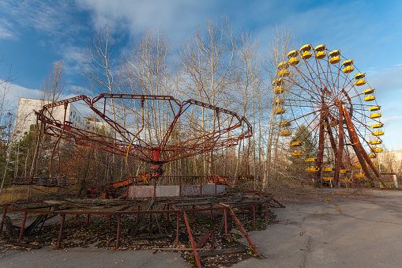

Grande roue
Vous avez passé une nuit correcte, vous avez encore les images du zombie d’hier mais ça ne vous achève pas,
vous rassembler vos affaires et vous partez, hier vous avez remarqué un trou dans le mur, vous utilisez ce dernier pour ressortir du bâtiment Le ciel est dégagé et il fait plutôt bon avec un peu de chance votre balade en bateau sera agréable
Ce bout de chemin jusqu’à la grande roue est plutôt calme,
pas de monde a signalé mise à part des coups de feux au loin mais c’est justement trop loin pour s’en préoccuper.
Ça vous fait pensez qu’il faudrait peut-être trouver une autre arme,
comme vous utiliser une route assez fréquentée vous regardez par la vitre de chaque voiture si vous pouvez utiliser quelque chose pour vous défendre mais rien,
rien jusqu’à la grande roue, c’est pas grave vous ferez sans.
La grande roue est en mauvaise état, vous feriez mieux de vous dépêcher avant qu’elle ne vous tombe sur la tête.
Avec chance il reste un dernier petit bateau et avec encore plus de chance avec de l’essence dedans
Vous décidez donc d’y aller sans plus tarder, l’eau est calme et la balade ne devrais pas durer longtemps.
Après une bonne vingtaine de minutes vous entendez un soudain bruit sur votre coque de bateau.
Vous vous rendez compte avec stupeur que c’est un zombie recouvert d’algues qui s’est accroché,
vous cherchez donc rapidement de quoi pour le déloger pendant que votre bateau continue d’avancer et que votre chien s’excite.
Puis à votre pied se cogne un harpon, ni une ni deux vous le prenez fermement dans vos mains et tirez un harpon dans le crane du misérable.
C’est le crane fendu qu’il retourne d’où il vient, le fond de l’eau.
Vous avez à peine le temps de vous remettre de vos émotions que vous êtes déjà arrivé de l’autre côté de la rive parfait,
au moment de freiner pour accoster les freins ne marchent plus et vous vous écrasez de force sur la plage mais ça va, rien de cassé.
Vous êtes maintenant sur la plage, de l'autre coté du lac, de ce coin de la ville il ne vous reste pas grand chose à marcher.
Il va falloir passer les immenses bâtiments et buildings mais après ça vous serez sur les routes de campgages là où habite votre famille.